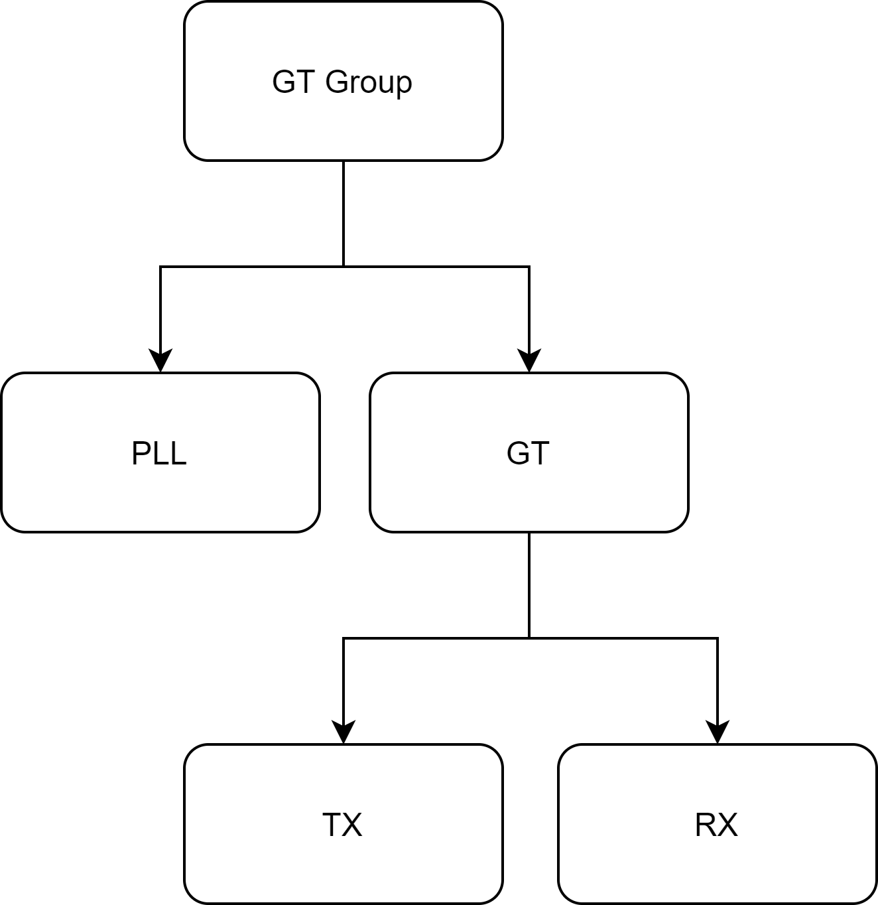

Properties¶
Properties allow users to directly read/write to the GT attributes and also access other high level
information related to the GTs. Operations on properties can be performed using the property attribute
attached to the below serial objects
Properties are always passed down from parent to child. A child will always have only a subset of the properties available in the parent. Serial objects always pass down properties in the following order
{kind=link}
Note
The top level IBERT object doesn’t have a property attribute. This is by design.
Property commands¶
5 different types of operations can be performed on a property
Get¶
The get() operation will fetch the value of the
property from cs_server, which in turn will return the value of the property stored in the object.
Note
Since the return value is cached in the cs_server object, it might not accurately reflect the current value in HW.
# Get all the GT Groups in the IBERT core
first_gt_group = ibert_0.gt_groups.at(index=0)
data = first_gt_group.property.get("<some property name>")
print(data)
>>> {"<some property name>": <property value cached>}
data = first_gt_group.property.get(["<property name 1>", "<property name 2>", "<property name 3>"])
print(data)
>>> {
"<property name 1>": <property value cached>,
"<property name 2>": <property value cached>,
"<property name 3>": <property value cached>
}
Set¶
The set() operation will set the value of given
properties in cs_server. This will in turn update the property value in its object but not commit it to HW.
To commit it to HW, please have a look at the Commit operation.
# Get all the GT Groups in the IBERT core
first_gt_group = ibert_0.gt_groups.at(index=0)
values_to_set = {"CH0_TX_PATTERN": "PRBS 31", "CH0_RX_PATTERN": "PRBS 31"}
first_gt_group.property.set(**values_to_set)
Note
It is important to note that the dictionary of properties to set, is unpacked in the call to set. This
is by design.
Commit¶
The commit() operation will commit the values of desired properties
to HW. Commit will make use of the property value stored in cs_server.
Almost always, commit() is used in conjunction with
set() i.e. you would first set the value of the property in cs_server
using set() and then commit the value to HW using
commit()
# Get all the GT Groups in the IBERT core
first_gt_group = ibert_0.gt_groups.at(index=0)
values_to_set = {"CH0_TX_PATTERN": "PRBS 31", "CH0_RX_PATTERN": "PRBS 31"}
first_gt_group.property.set(**values_to_set)
first_gt_group.commit(list(values_to_set.keys()))
Refresh¶
The refresh() operation will fetch the value of the
property from HW and update the value in cs_server, before returning it.
# Get all the GT Groups in the IBERT core
first_gt_group = ibert_0.gt_groups.at(index=0)
data = first_gt_group.property.refresh("<some property name>")
print(data)
>>> {"<some property name>": <property value>}
data = first_gt_group.property.refresh(["<property name 1>", "<property name 2>", "<property name 3>"])
print(data)
>>> {
"<property name 1>": <property value>,
"<property name 2>": <property value>,
"<property name 3>": <property value>
}
Report¶
The report() operation provides information like value type,
default value, valid set of values (in case the property is an enumerated property), permissions, etc, for any given property.
# Get all the GT Groups in the IBERT core
first_gt_group = ibert_0.gt_groups.at(index=0)
data = first_gt_group.property.report("<some property name>")
print(data)
>>> {
"<some property name>": {
"Name": "<some property name>",
"Description": <>,
"Permission": ["SET", "GET", "REFRESH", "COMMIT"],
"Default value": <>,
"Property type": "NORMAL" or "COMPUTED",
"Current value": <>,
"Groups": [],
"Value type": <>
}
}
data = first_gt_group.property.report(["<property name 1>", "<property name 2>", "<enum property name 1>"])
print(data)
>>> {
"<property name 1>": {
"Name": "<property name 1>",
"Description": <>,
"Permission": ["SET", "GET", "REFRESH", "COMMIT"],
"Default value": <>,
"Property type": "NORMAL" or "COMPUTED",
"Current value": <>,
"Groups": [...],
"Value type": <>
},
"<property name 2>": {
"Name": "<property name 2>",
"Description": <>,
"Permission": ["SET", "GET", "REFRESH", "COMMIT"],
"Default value": <>,
"Property type": "NORMAL" or "COMPUTED",
"Current value": <>,
"Groups": [...],
"Value type": <>
},
"<enum property name 1>": {
"Name": "<enum property name 1>",
"Description": <>,
"Permission": ["SET", "GET", "REFRESH", "COMMIT"],
"Default value": <>,
"Property type": "NORMAL" or "COMPUTED",
"Current value": <>,
"Groups": [...],
"Valid values": [...]
"Value type": <>
},
}
As shown above, the Valid values key will be present in the report only if the property is an enumerated property.
Note
Calling report without any arguments, fetches information for all available properties.
Watchlist¶
The watchlist features allows users to ‘observe’ the value of a property as it changes. This enables easily tracking
a property in HW and is particularly useful to check if properties of interest, were modified in the background.
The watchlist can be accessed via the property attribute in serial objects as property.watchlist.
To setup a watch for a property, use the add() command as shown
def property_watch_event_handler(events):
pass
# Get all the GT Groups in the IBERT core
first_gt_group = ibert_0.gt_groups.at(index=0)
first_gt_groups.property.watchlist.add(["property 1", "property 2"], listeners=property_watch_event_handler)
Note
A watch can be created only once for each property
In above snippet, anytime the value of property 1 and/or property 2 changes, the function
property_watch_event_handler is called with a queue containing instance(s) of
PropertyUpdateEvent
To stop observing properties, use the remove() command as shown
first_gt_groups.property.watchlist.remove(["property 1", "property 2"])